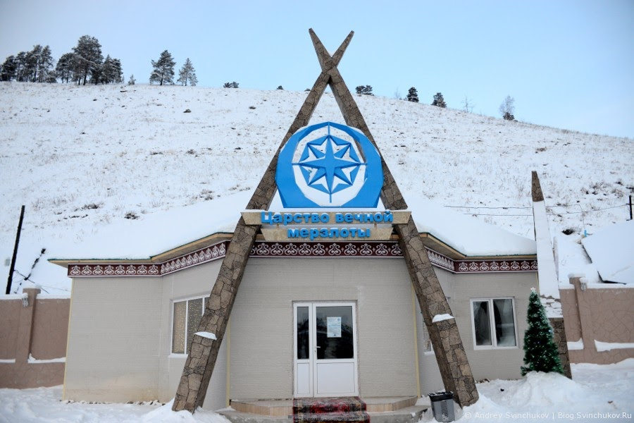
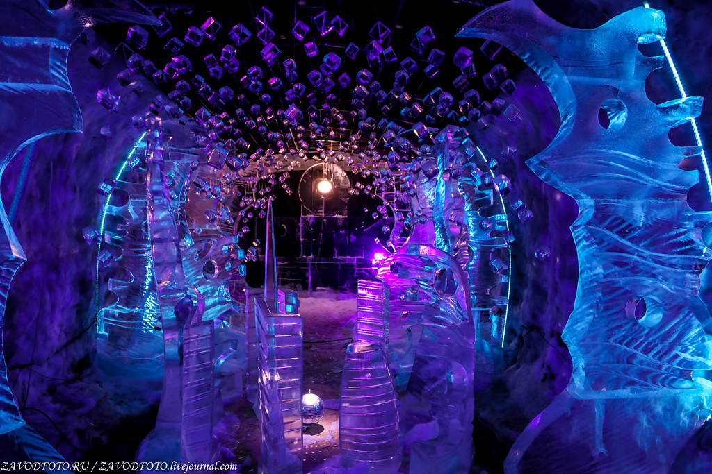
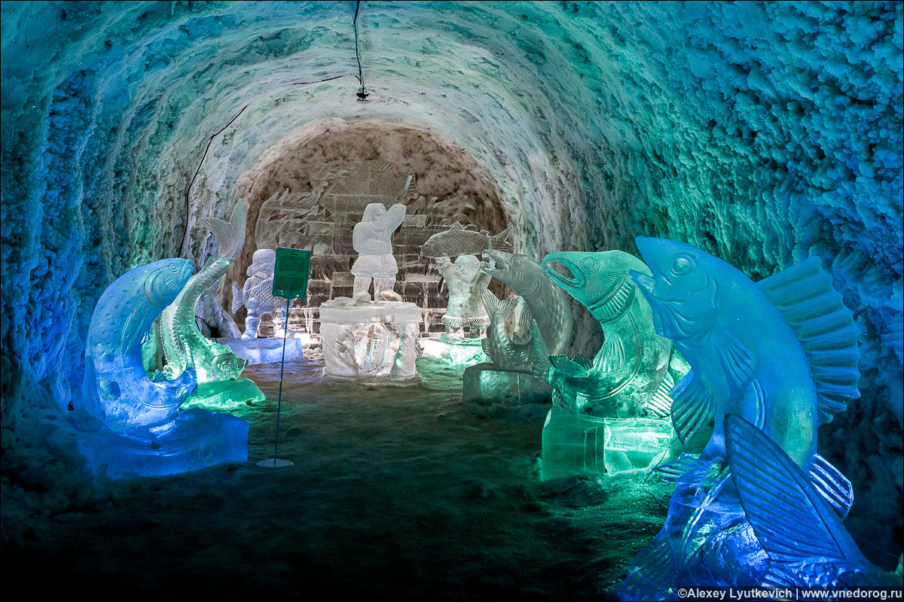
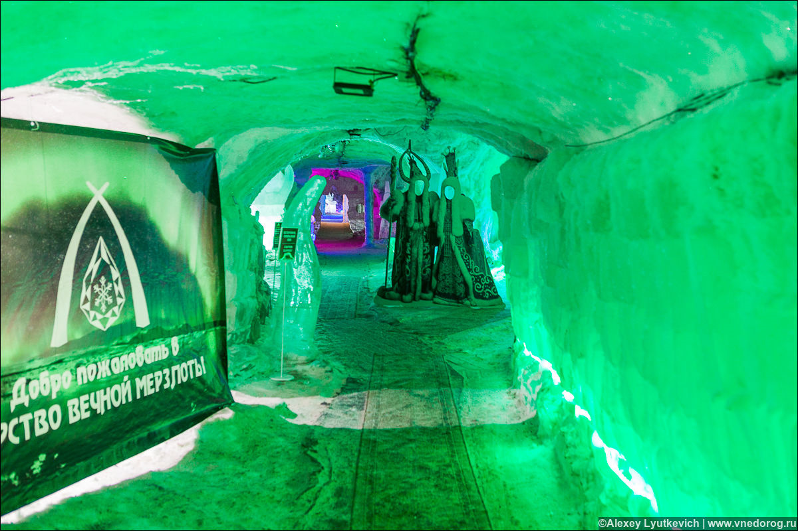

Travel
Царство вечной мерзлоты




Царство вечной мерзлоты — это туристический комплекс, который представляет собой гигантский не тающий ледник в штольне у сопки Чочур-Муран, что примерно в 10 км от Якутска. В советское время штольня этой сопки предназначалась для хранения продуктов. И уже в 2005 году впервые открыл свои двери для всех желающих. С того момента Царство вечной мерзлоты стало одной из главных достопримечательностей Якутска и визитной карточкой всей Республики, куда приезжают местные жители и туристы со всех уголков Земли.
- Put on this page information about your product
- A detailed description of your product
- Tell us about the advantages and merits
- Associate the page with the payment system